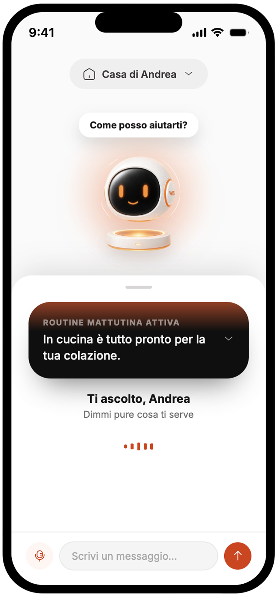
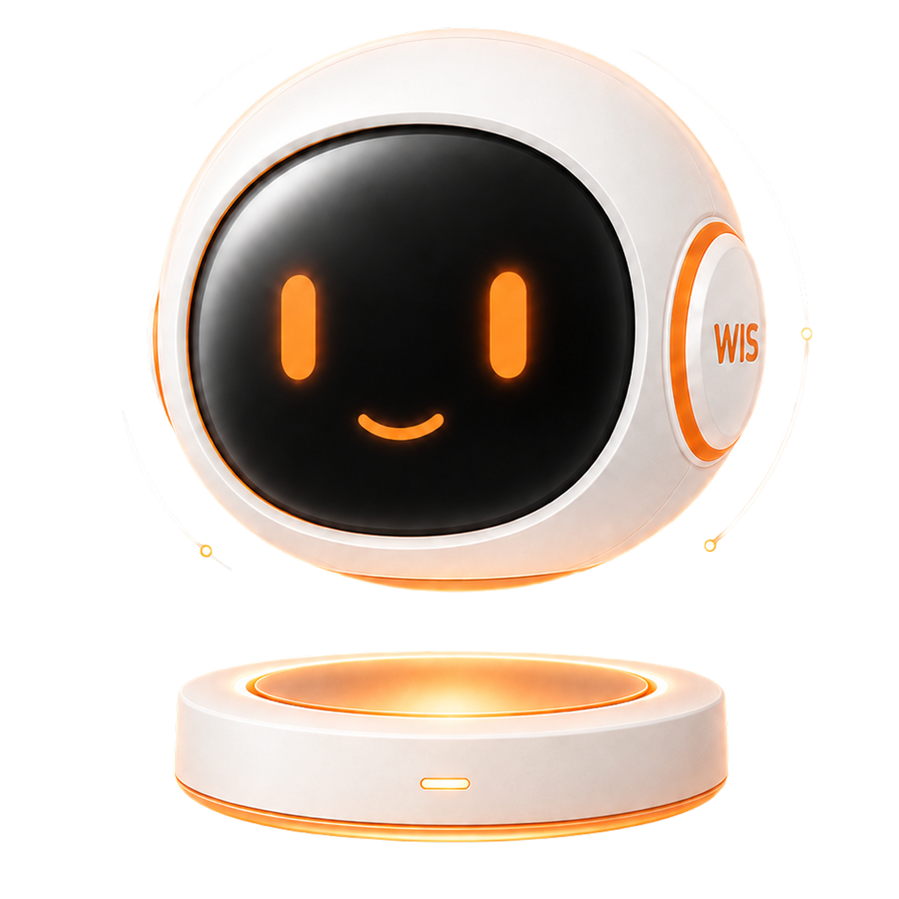
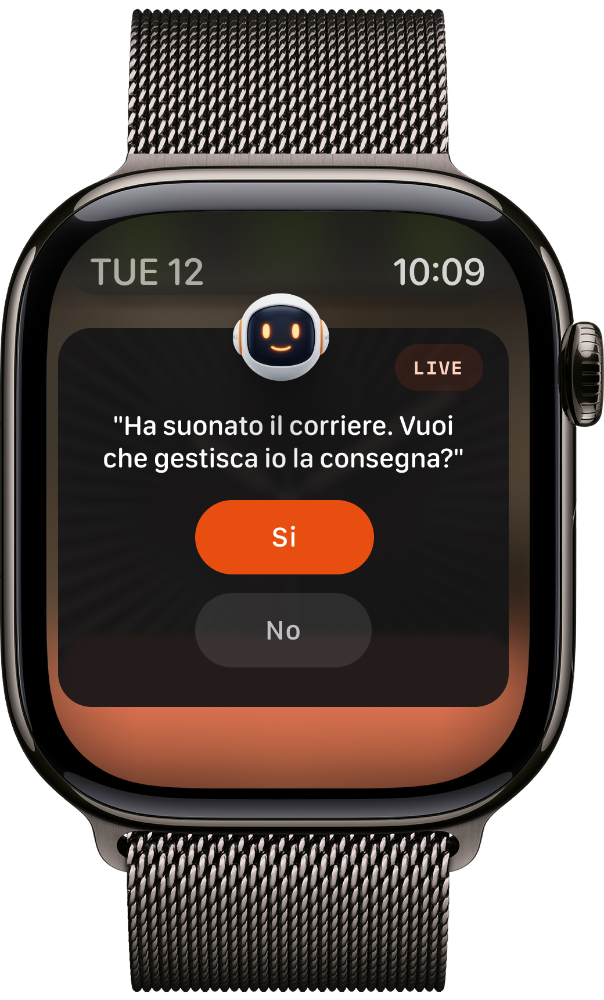
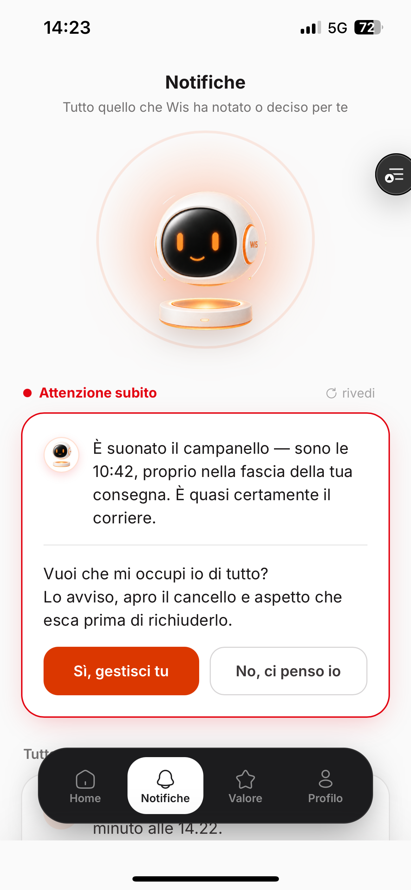
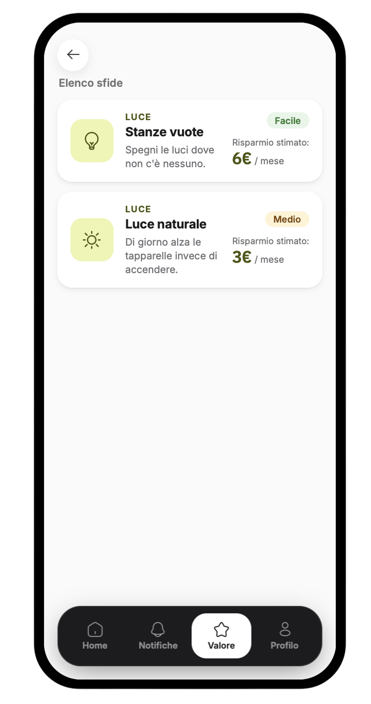
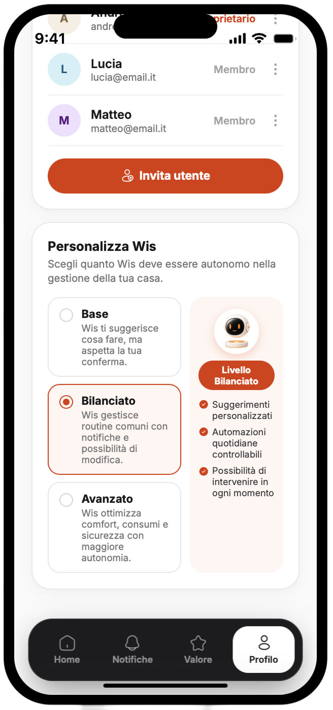

WIS
A smart home AI agent designed around trust, not control.


Smart home apps became control panels.
Today's interfaces are dominated by alarms, settings and warnings. The benefits stay invisible.
Users don't want another system to manage. They want a home that adapts to them.
"I don't want to control every device. I want to trust my home."
In 4 days, design the relationship between a person and an AI agent that runs their home. Not a better control panel, but an interface for trust: notifications that build calm in the everyday, value made visible, and control the user chooses.
Researching where trust lives.
Trust is built or lost in daily moments. We focused on the three where it's most at stake: comfort, energy, safety. With only four days, we compressed the research: competitor benchmarking and desk analysis, accelerated with AI-assisted synthesis.
No competitor observes, learns and proposes. They all report. That gap became our direction.
It interrupts only when it matters.
WIS stays quiet and reaches out only when something really needs you, like a delivery at the door. Because it asks for your attention so rarely, every notification counts, so you stop checking and trust it to surface what matters.


The same quiet signal, wherever you are
The home gives back. WIS makes it visible.
Concrete savings every month, for you and for the planet.
Challenges turn saving into a game, a light nudge to do a bit more across light, climate, time and air.
Every challenge shows what it's worth, how far you are, and what you gain.


Trust it as much as you choose.

Feeling safe means trusting WIS to act when it matters. You set how far that trust goes, across three levels.
Control never disappears: it gets delegated, consciously.
An app designed to be opened less, and opened gladly.
Trust isn't something you can feel in a mockup.
The brief was about trust between a person and an AI. So we didn't stop at screens: we made it tangible, a prototype you can move through and interact with, built with AI from our Figma designs.
The responses are scripted, but the experience is real enough to test the relationship the brief asked for.
Our working timeline.
My stream surfaced the insight: invisible savings don't exist.
I led the build of our working prototype, turning our Figma designs into an interactive app with AI.
Presented to the client's Experience Design team, who highlighted the innovative take on the human-AI relationship, the challenge system as an engagement driver, and full coverage of the brief's strategic questions.
The one thing this project made clear to me: with AI making the build so fast, the real work wasn't producing screens anymore. It was deciding which ideas were worth building.

Team: F. Altieri, F. Dama, E. Giolitti, Y. Kumar, L. Orsillo, G. Rondi
Master UX/UI Design, Talent Garden · 2026